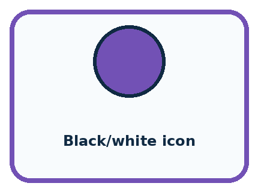
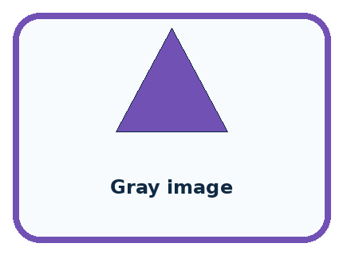
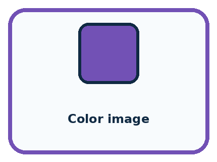
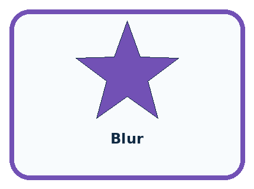
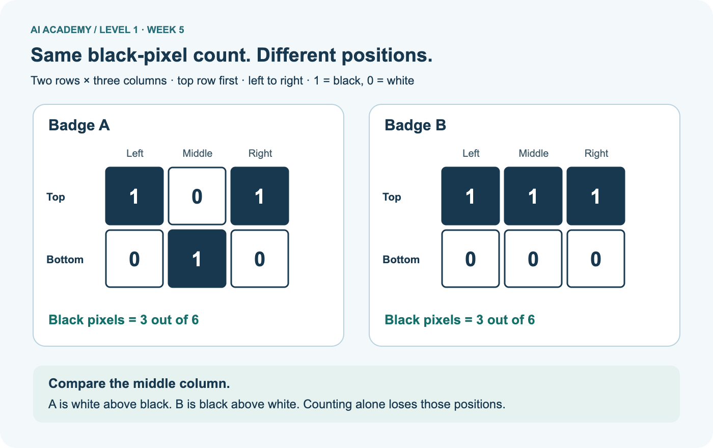

AI Academy · Level 1 · Grade 6 · Week 5 · Student lesson
Pictures Become Numbers
Learn to understand, design, build, test and explain AI systems responsibly.
Project: Helpful Classroom Sorter
THE CONNECTED WEEK
Keep the positions, not just the count.
Agree on an image code, reconstruct a grid, compare two badges and explain what a pixel count loses.
Keep one habit: State the dimensions and convention → preserve each position → separate reconstruction from interpretation.
Main lesson · Section 1
How can numbers preserve a picture?
Keep the pixel values, their positions and the agreed code together.
Start with an incomplete message
A friend sends you six numbers: 1,0,1,0,1,0. Is that one row, two rows or three? The numbers need a shared map of positions before you can reconstruct the intended picture.
Retrieve the fitting limit
Two thresholds can agree on all fitting examples but disagree on a new input. Does zero fitting error identify one uniquely correct rule?
Close your notes first. A rough first answer helps us choose the right starting point; it is not a score for your ability.
After trying, check the relevant lesson or ask your teacher. Change the part of your explanation that the evidence shows was wrong.
By the end, you can…
I can encode and reconstruct a small image using an explicit grid convention.
I can explain why pixel counts alone cannot recover an arrangement.
I can distinguish numerical image data from a model's interpretation of that data.
Earlier wording, alternative practice and picture transcripts
Your learning target
Remember before reading
Without opening the old lesson, explain one key idea from Rules or Learned Patterns?. Give an example and a mistake that the idea helps you avoid.
Without opening the old lesson, explain one key idea from Input, Process, Output. Give an example and a mistake that the idea helps you avoid.
A digital image is a grid of measured color values.

LEARNING TARGET Encode a 2×3 monochrome image with top row black–white–black and bottom row white–black–white, using 1 for black. A partner reads columns first.
Explain why the image changes although the six values are identical.
Learner name:
Readiness for the connected explanation
This week’s end goal
By the end, I can encode pixel positions and show why a count cannot reconstruct a picture.
Main lesson · Section 2
Agree on the code before drawing
Our exercise uses 1 for black and 0 for white, with rows read from the top and left to right.
Send a picture using numbers
Imagine sending a small black-and-white sign using only numbers. We can divide the sign into a grid, record 1 for a black square and 0 for a white square, and read each row from left to right, starting at the top.
The receiver needs the width, height and these conventions to reconstruct the same arrangement.
A convention belongs to a particular format
A pixel is a position with a recorded value. In our simplified binary image, one value selects black or white. Other image formats can record brightness levels or multiple colour channels.
The convention 1 means black belongs to this exercise; it is not a universal rule for every digital image.
Storage is different from recognition
Encoding a picture does not recognise what it depicts. A program can store or display the numbers without calling the image a letter, an arrow or a person.
Interpretation is another operation, just as displaying a book title was different from reading the entire book in Week 2.
Check the message instructions
Before decoding, tell your partner the width, height, reading order and what 0 and 1 mean. Which of these facts was missing from the opening six-number message?
Earlier wording, alternative practice and picture transcripts
PICTURE STORY
Look Closely Before You Explain
Pictures give clues; evidence tells us what the clues mean.

MYSTERY A 5 by 5 black-and-white picture can be stored as 25 numbers, one value for each pixel position.
What do you notice?
Name three visible details without explaining them yet.
Circle the detail most connected to the system's decision.
Name one detail that may be decoration or distraction.
Make a first prediction and state the clue that supports it.
My observations, prediction, and evidence:
GOOD THINKING A prediction can change when stronger evidence appears.
A closer explanation
Main lesson · Section 3
Decode the grid, then read it back
Check every position rather than guessing the shape from a familiar-looking pattern.
Read the three-by-three code
A three by three binary image
Read rows top to bottom. Within each row read left to right. 1 is black and 0 is white.
Explain each row
The first row is 0,1,0, so only its middle pixel is black. The second row is 1,1,1, so all three are black. The third row repeats the first. This reconstructs the displayed cross-like pattern under our convention.
Keep the shape with the flattened list
A flattened record would be 0,1,0,1,1,1,0,1,0. Without the grid dimensions, the same nine values could also be drawn in one row of nine. Keep the shape information with the values.
Width times height counts pixels; it does not tell us their contents.
Connect a sentence to a pixel
Point to the input, the deciding step and the result in this week’s visual. Explain the same step in ordinary words. A picture helps when you can say what each part represents.
Earlier wording, alternative practice and picture transcripts
VISUAL MECHANISM
Input → Process → Output
Follow the information instead of imagining magic inside the machine.


INPUT light measured at grid locations
PROCESS store and transform pixel values
OUTPUT a displayed, resized, blurred, or classified image
CORE IDEA A digital image is a grid of measured color values.
UNDER THE HOOD Digital images sample a scene across a spatial grid. Each pixel stores channel values, commonly red, green, and blue.
Resolution controls sampling density; transformations operate on numbers, not on an intact object inside the computer.
Draw a fresh example with all three stages:
A closer explanation
Connect the picture and the explanation
Main lesson · Section 4
Compare the image clues
Use the supplied picture and caption together to distinguish a measurement from an interpretation.
Four cases, paired with their explanations


The case to investigate
CASE 1 — Black/white icon Clue: 0 and 1 values. Meaning: two possible brightness levels.


The case to investigate
CASE 2 — Gray image Clue: one brightness number per pixel. Meaning: many light levels.


The case to investigate
CASE 3 — Color image Clue: red, green, blue values. Meaning: three channels.


The case to investigate
CASE 4 — Blur Clue: nearby values are mixed. Meaning: detail is reduced.
Discuss the confusing pair
Which two pictures are easiest to confuse? What evidence separates them?
Keep the pixel boundary clear
BOUNDARY A pixel is a measurement at a location, not a tiny copy of the object.
Earlier wording, alternative practice and picture transcripts
PICTURE GALLERY
Four Cases, Four Clues
Use the visual cue, then read the evidence carefully.
CASE 1 — Black/white icon Clue: 0 and 1 values. Meaning: two possible brightness levels.
CASE 2 — Gray image Clue: one brightness number per pixel. Meaning: many light levels.
CASE 3 — Color image Clue: red, green, blue values. Meaning: three channels.
CASE 4 — Blur Clue: nearby values are mixed. Meaning: detail is reduced.
Change one thing in the pictured case
Change: Change A’s bottom-left pixel from 0 to 1.
Prediction: A now has four dark pixels; its row encoding is 101 / 110.
Reason: Exactly one light pixel becomes dark; the other five positions remain unchanged.
Main lesson · Section 6
Two badges. Three dark pixels. Different pictures.
A count preserves how many, while a grid preserves where.
The supplied badge convention and rows
Two fictional 2-by-3 pixel badges contain the same number of dark squares.
Dark=1, light=0; rows are read top to bottom, left to right.
Badge A rows: 1,0,1 / 0,1,0. Badge B: 1,1,1 / 0,0,0.
Compare the original arrangements



Trace what a count keeps


Explain why equal counts are insufficient
A grid preserves where each brightness belongs. Adding the six values preserves only the dark count, which is 3 in both images. The total therefore cannot distinguish these badges.
Dimensions and reading order belong to the representation, not to an optional caption.
Predict one changed pixel
Before checking: change only Badge A’s bottom-left pixel from 0 to 1. Write both complete new rows and the new dark count. Which positions stayed the same? Read your new code back as a picture.
Check the changed badge


Keep the toy format’s limits
This toy binary encoding does not include real photographs’ colour channels, compression or illumination effects.
Read the position back
Read the labelled picture: Find a position where the original badges differ, then read the changed A back as a picture.
Earlier wording, alternative practice and picture transcripts
WORKED EXAMPLE
Watch the Reasoning, Not Just the Answer
Every step connects a claim to observable evidence.

CASE A 5 by 5 black-and-white picture can be stored as 25 numbers, one value for each pixel position.
STEP 1 — OBSERVE light measured at grid locations
STEP 2 — TRACE store and transform pixel values
STEP 3 — CONCLUDE a displayed, resized, blurred, or classified image
MODEL REASONING Each grid position becomes one displayed square. A blur combines nearby values, so isolated corners and thin lines disappear before large regions.
The computer transforms numbers; the human viewer recognizes the shape.
DO NOT OVERCLAIM A pixel is a measurement at a location, not a tiny copy of the object.
What new evidence could change this answer?
A closer explanation
Suppose we discard the row records and retain only black pixel count=5. That count matches the cross, but it also matches rows 1,1,1 then 1,1,0 then 0,0,0. The second arrangement fills the top row and two positions below it.
Both have five black pixels and nine pixels in total, yet they are different images.
| Stored information | What it establishes | What remains unknown |
|---|---|---|
| Width 3 and height 3 | There are 9 positions | The value at each position |
| Black pixel count 5 | Five positions are black under this code | Which five positions |
| Dimensions and all three ordered rows | The full binary grid under this convention | What a viewer or model will call the picture |
A pixel count can still be a useful feature for some tasks. For example, it can separate empty grids from grids with at least one mark. But it cannot separate every shape.
To judge a feature, ask whether it retains the distinctions required by the task.
Learn from the worked case
Cover the result before checking it. Say what is given, choose the procedure, and follow one step at a time. Then uncover the result and explain your first mismatch. Ask why a step is allowed, not only what number it produces.
A pictorial worked case: Pictures Become Numbers
The facts we will use


Read the picture one step at a time
Why this result follows
What this example does not establish
Change one thing: Change A’s bottom-left pixel from 0 to 1. Predict the result before checking the explanation. What remains the same?


Main lesson · Section 7
Do not confuse more pixels with better evidence
A reconstruction, an interpretation and an instruction make different claims.
More positions do not guarantee a useful image
Higher resolution offers more positions for recording detail, but it does not guarantee a useful image. A larger blurry image can still hide a feature, and a cropped image can omit it entirely.
A model's label also depends on what it was fitted to distinguish and the conditions represented in its examples.
Separate three levels of claim
Keep claims at the right stage. These nine values encode this grid is a reconstruction claim. This grid depicts a plus sign is an interpretation. This sign tells a person what to do adds context and authority.
One does not automatically establish the others.
Repair the tempting claims
CLAIM A The computer stores a real cat inside the image file.
CLAIM B More pixels always guarantee a correct classification.
STRONG ANSWER FRAME I claim ______ because the evidence shows ______. The process is ______. One limit is ______.
Earlier wording, alternative practice and picture transcripts
COMPARE
Same Result, Different Reason
A comparison helps reveal the true concept boundary.
| Case | Evidence | What it shows |
|---|---|---|
| Black/white icon | 0 and 1 values | two possible brightness levels |
| Gray image | one brightness number per pixel | many light levels |
| Color image | red, green, blue values | three channels |
| Blur | nearby values are mixed | detail is reduced |
Repair two tempting claims
Repair:
Repair:
A closer explanation
Main lesson · Section 8
Practise: reconstruct, read back and diagnose
Use a round trip from code to drawing to code to locate a mismatch.
Draw the two-by-three practice grid
Use width 3, height 2 and rows 1,0,1 then 0,1,0. Draw two rows of three squares and fill exactly the positions marked 1. Check by reading your drawing back into numbers.
A round trip from code to drawing to code can reveal a swapped row or a missed pixel.
Now restore a missing dimension
Your W2 message is 1,0,0,1,1,0. Show it as one row of width 6, then as two rows of width 3. In both versions keep the same value order, with 1 black and 0 white. Explain which missing field would tell a receiver which shape to use.
Use workbook W2 for the connected example “Images as numerical grids”. First fill the input and rule boxes. Try the middle steps before asking for a hint. After a hint, try the next step yourself.
| Plan | Do | Check |
|---|---|---|
| What is given? Which rule or procedure applies? | Record each intermediate step. | Does the result follow? What remains unknown? |
Inspect the input before changing a classifier
If an image classifier mislabels a picture, first inspect the input representation. Was the width correct? Were the rows reversed? Did the program use the intended colour convention?
A later classifier cannot reliably repair every mistake in how its input was prepared.
Explain and exchange roles
Explain your trace to a partner. Your partner points to one step to check. Swap roles on the next case. Each person writes their own explanation.
Does 1 always mean black?
Use the worked case for Images as numerical grids. Proposed explanation: “The number one always means black”. Decide whether this explanation is supported.
Point to the step or supplied fact that decides; explain your repair if needed.
Answer on your own before discussion. If you are unsure, say which step you need help with.
Check the badge position
Find a position where the original badges differ, then read the changed A back as a picture.
This is supported practice. Keep the separately named independent case for an attempt before feedback.
Earlier wording, alternative practice and picture transcripts
GUIDED PRACTICE
Try It, Check It, Explain It
Use support now so you can succeed independently later.

Explain how the picture story demonstrates this idea: A digital image is a grid of measured color values.
Use a fresh example to explain pixel.
Trace a new input → process → output example.
Find and repair the error in: More pixels always guarantee a correct classification.
Invent one edge case and name the safe response.
PARTNER CHECK Point to the evidence. Do not accept an answer that only repeats the vocabulary word.
A closer explanation
Practise with less help: Preserve the missing field
Check your reasoning
Explain the picture
Main lesson · Section 9
Investigate: decode, then apply a toy blur
Use an exact transformation so you can compare a prediction with the actual paper calculation.
Your complete decoding instructions
Use width 2 and height 2, with rows 0,1 / 1,0. Here 1 means black and 0 white. Predict the drawing, then decode it on paper and read it back. Keep the numeric grid separate from any name you give its pattern.
Predict and apply the averaging rule
For a declared toy blur, add the four values, divide by 4 and replace every position by that average. On this extended scale, 0.5 is halfway grey. Predict the result before calculating. Then try rows 1,0 / 0,1. Does this blur preserve which diagonal was dark? This is one fully specified averaging rule, not a claim about every real image-blurring method.
Keep a normal case and an edge case clearly separated.
Record what happened—even when it does not match your prediction.
Explain the result, one limitation, and the next useful test.
Keep the original, result and limit
| Case | Prediction | Observed result | What it means |
|---|---|---|---|
| Normal | |||
| Edge |
Before trying: what do I expect, and why? While trying: which step could first go wrong? Afterwards: what did I actually observe, and what should change? Keep “not run” if you only traced the procedure.
Earlier wording, alternative practice and picture transcripts
EXPLORER LAB
Pixel Picture Decoder
Predict first, test honestly, and explain what the evidence means.

State your prediction before the result is known.
Complete the task: Decode a tiny pixel picture and predict a blurred version.
INDEPENDENCE After support is removed, repeat the proof with a fresh case.
Plan → try → check
Main lesson · Section 14
Try alone: create two new equal-count images
Keep complete row encodings and explain what their shared count loses.
The new case and its code
For this new case, use 1 for black and 0 for white. Read each row left to right, with the top row first. Width 4 and height 2 means two rows of four values. Choose your own two arrangements.
Create two different images of width 4 and height 2, each with exactly three black pixels. Write both complete row encodings. Explain which fact their shared count retains and which difference it discards.
Keep one first attempt
Attempt this case before feedback. Record any help. Earlier examples below are further practice; a case already practised with feedback cannot establish fresh transfer.
Your teacher has the independent answer and scoring criteria. Complete the matching workbook week to keep your practice evidence together.
Use feedback afterwards
Attempt the independent case before hints. Record whether you worked alone, used a hint or followed a model. After feedback, fix the first unsupported step and explain why it changed.
A later check uses a changed case, not a copied answer.
Earlier wording, alternative practice and picture transcripts
Independent case: Design a new counterexample
Week 5 Independent application
Close the worked explanation. Apply the idea to this different question without copying.
Use 0 for dark and 1 for light. Draw a two-by-two image with rows [1,0] and [0,1]. Then change only the bottom-left pixel to light. Which number changes?
My answer, with a trace, calculation or supporting evidence
Create and test
Change one relevant detail. Predict the result before testing. Include a boundary or missing-information case when it helps reveal a limit.
My changed input and expected result
Connect to your project
Choose which visible item features the Classroom Sorter may represent as image measurements and name one feature that lighting could distort.
The evidence I will keep
Transfer practice from the original programme
Encode a 2×3 monochrome image with top row black–white–black and bottom row white–black–white, using 1 for black. A partner reads columns first. Explain why the image changes although the six values are identical.
Use feedback to improve
Main lesson · Section 11
Keep the spatial clues your sorter needs
Choose measurements for the task; do not assume a pixel total describes a shape.
This week’s design decision
THIS WEEK'S CHECKPOINT Choose which visible item features the Classroom Sorter may represent as image measurements and name one feature that lighting could distort.
If the sorter uses images, retain dimensions and arrangement rather than assuming a dark-pixel count describes shape.
Plan the representation and checks
What real classroom need does this serve?
What information is necessary—and what should stay private?
What happens inside the process?
What normal and edge cases will you test?
When should it say not sure or ask a person?
Keep the sensing boundary
RESPONSIBLE DESIGN A pixel is a measurement at a location, not a tiny copy of the object.
Earlier wording, alternative practice and picture transcripts
PROJECT
Helpful Classroom Sorter
Build one coherent system across the year, one evidence-based decision at a time.


My project decision:
Evidence for your project
Main lesson · Section 16
Finish: explain what the numbers preserve
Close your notes and distinguish the encoded positions from the meaning assigned to a picture.
Your exit explanation
Close your notes. Explain this goal in your own words: Encode and reconstruct a small image using an explicit grid convention
Choose support and a later return
If you are unsure, return to the worked picture and explain one arrow. If you are ready, change an input or assumption and justify your prediction.
Save your workbook evidence. At the next review, try a different case before opening your old answer.
Reference bank and extra practice
Choose the reference that helps your next step.
Your image-representation word guide
Reference · Section 5
Your image-representation word guide
Use each word to explain what a particular record preserves.
Pixels, grids, channels and resolution
| Word | Meaning | My example |
|---|---|---|
| pixel | one picture element in a grid | |
| grid | rows and columns that locate values | |
| channel | one measured color component | |
| resolution | number of pixels used to represent an image |
Encoding, arrangement and interpretation
| Word | Meaning |
|---|---|
| Encoding | A convention for representing information with symbols or numbers |
| Spatial arrangement | Where elements are located relative to one another |
| Interpretation | A meaning or category assigned to a representation using a rule, model or human judgment |
Repair the claim
CLAIM TO REPAIR The computer stores a real cat inside the image file.
Use one vocabulary word and one piece of evidence to repair it:
Earlier wording, alternative practice and picture transcripts
VOCABULARY
Words You Can See and Use
The badge is a memory cue; the definition does the real thinking work.


Misconception detective
WORD POWER A strong definition helps you decide something in a new case.
Words used in the closer explanation
Choose a stronger image challenge
Reference · Section 10
Choose a stronger image challenge
Choose one step that tests how well your representation supports a question.
Pick a useful challenge
RECALL Define pixel.
EXPLAIN A digital image is a grid of measured color values.
TRACE Show the input, process, and output.
DIAGNOSE Repair: The computer stores a real cat inside the image file.
TRANSFER Apply the idea to a new home or classroom case.
CREATE Design one revealing test.
DEFEND Give a claim, evidence, mechanism, limit, and safe action.
Earlier wording, alternative practice and picture transcripts
PRACTICE LADDER
Climb from Recall to Defense
Each step asks for a stronger kind of understanding.

RETRY RULE A coached answer becomes mastery only after you solve a different case independently.
Reference: check an image explanation
Reference · Section 12
Reference: check an image explanation
Use after practice. The new two-by-four counterexample is this week’s selected independent attempt.
Check the representation and limit
□ Name or draw the fresh case.
□ Trace input, process, and output.
□ State the conclusion and strongest evidence.
□ Name one limit, failure, missing clue, or fairness/privacy concern.
□ Explain one safe next action or improvement.
Record support
My level: □ Not yet □ With one hint □ Independently □ I can teach it
Earlier wording, alternative practice and picture transcripts
MASTERY
Checklist for an image-representation explanation
Use this checklist after practice. The new two-by-four equal-count pair is this week’s selected independent attempt.

EXPLANATION CHECK State dimensions, reading order and the colour convention; reconstruct the values and explain which spatial information a count discards.
Independent evidence:
SELF-CHECK Each grid position becomes one displayed square. A blur combines nearby values, so isolated corners and thin lines disappear before large regions.
The computer transforms numbers; the human viewer recognizes the shape.
NEXT BRIDGE Carry today's evidence habit into: Sound Becomes a Signal.
Extra practice: change one square
Reference · Section 13
Extra practice: change one square
Draw the small image before opening the worked explanation.
Read the case and requested change
A 2 by 2 image has rows [0,1] and [1,0]. Zero means white and one means black.
Draw it, then change the top-left value to 1.
Your explanation
Which detail supports the answer, and why does it matter?
Check after trying
Initially top-right and bottom-left are black. The change produces three black squares. Pixel values encode an image; object recognition is a separate interpretation.
| Evidence or stage | Value or result |
|---|---|
| Top left | 0 |
| Top right | 1 |
| Bottom left | 1 |
| Bottom right | 0 |
Earlier wording, alternative practice and picture transcripts
Week 5 Worked case
Use the supplied details to practise the weekly concept before attempting the independent question. This case extends the illustrated lesson.
The situation
The question
Worked explanation
Explain it in your own words
Trace the supplied case visually
A picture represented by four numbers
A 2 by 2 image has rows [0,1] and [1,0]. Zero means white and one means black.
Draw it, then change the top-left value to 1.
Initially top-right and bottom-left are black. The change produces three black squares. Pixel values encode an image; object recognition is a separate interpretation.
Reference: original image lesson checklist
Reference · Section 15
Reference: original image lesson checklist
Use this additional checklist when it helps you inspect your work.
Targets and evidence
| By the end, I can | How I will show it |
|---|---|
| Encode and reconstruct a small image using an explicit grid convention | Explain the deciding step, show a trace or test, and state one limit. |
| Explain why pixel counts alone cannot recover an arrangement | Explain the deciding step, show a trace or test, and state one limit. |
| Distinguish numerical image data from a model's interpretation of that data | Explain the deciding step, show a trace or test, and state one limit. |
Keep your route and prediction
Remember → watch and explain → try with help → investigate → try independently → keep project evidence. Your teacher may spread this lesson across several classes.
Keep your first prediction. Compare it with what the evidence shows and explain any change.
Earlier wording, alternative practice and picture transcripts
Start with this question: Two fictional 2-by-3 pixel badges contain the same number of dark squares.
Extra practice: image pictures and feedback
Reference · Section 17
Extra practice: image pictures and feedback
Attempt each question before opening its explanation. Keep this practice separate from the reserved new case.
First supported question
Two fictional 2-by-3 pixel badges contain the same number of dark squares.
Which labelled step matches this detail? The totals agree, but middle-top and middle-bottom positions differ.
1. Compare arrangements
2. Badge B
3. Pixel convention
4. Badge A
Hint if needed: Read the steps in the pictorial case. Match the supplied detail to the stage that performs or records it.
Practice 1: explain the deciding evidence
Check the first explanation
After your attempt, compare with the supported explanation: Compare arrangements The totals agree, but middle-top and middle-bottom positions differ. A grid preserves where each brightness belongs.
Adding the six values preserves only the dark count, which is 3 in both images. The total therefore cannot distinguish these badges. Dimensions and reading order belong to the representation, not to an optional caption.
Changed-pixel question
Changed-case practice: Change A’s bottom-left pixel from 0 to 1. Which conclusion is supported by the supplied facts?
1. A now has four dark pixels; its row encoding is 101 / 110.
2. We can decide the result without examining the changed input or the procedure.
3. This one example guarantees correct results for every future input.
Hint if needed: Use the changed condition and the deciding step in the pictorial trace. The answer must say what follows from those facts.
Practice 2: explain the deciding evidence
Check the changed pixel
After your attempt, compare with the supported explanation: A now has four dark pixels; its row encoding is 101 / 110. Exactly one light pixel becomes dark; the other five positions remain unchanged.
Repair and save
Review Rules or Learned Patterns? (ai-1/4). Goal: Execute a stated rule including its boundary. Short practice: Show which stage used labels and which stage used only the new measurement..
Return to this week and explain what you changed.
Review Input, Process, Output (ai-1/2). Goal: Trace information through a system without confusing information with a physical action. Short practice: Use the richer record to find blue pencils in Box B.
Explain why total alone was insufficient.. Return to this week and explain what you changed.
Use Download completed work in the hosted lesson to export your answers, reflections, practice feedback and code-run evidence. Open the HTML copy to read or print it.
Drafts stay in this browser when storage is available; clear drafts on a shared device.
Earlier wording, alternative practice and picture transcripts
Use this supported practice once, in the browser or on paper. Keep the reserved independent assessment for a separate first attempt before teacher feedback.
Repair a missing building block
Keep your completed work
Reference: six-picture image journey
Reference · Section 18
Reference: six-picture image journey
Revisit the image that serves your current question; the main badge diagrams already sit beside the explanation.
01. Pictures Become Numbers: the case


Two fictional 2-by-3 pixel badges contain the same number of dark squares. Supplied facts: Dark=1, light=0; rows are read top to bottom, left to right. Badge A rows: 1,0,1 / 0,1,0. Badge B: 1,1,1 / 0,0,0.
Point to the given fact that matters most. Explain why it matters.
02. Follow the deciding steps
Pixel convention: Each image has two rows and three columns; 1 means dark. → Badge A: Top 101, bottom 010: three dark pixels. → Badge B: Top 111, bottom 000: also three dark pixels. → Compare arrangements: The totals agree, but middle-top and middle-bottom positions differ.
Point to each numbered stage and explain which recorded input it uses.
03. Pixel positions: two badges, same dark count
Pixel positions: two badges, same dark count. A top: Left = 1, Middle = 0, Right = 1. A bottom: Left = 0, Middle = 1, Right = 0. B top: Left = 1, Middle = 1, Right = 1. B bottom: Left = 0, Middle = 0, Right = 0.
Read the labels and values. Explain the relationship the model shows.
04. Change one thing. Trace what follows.
Original case: The totals agree, but middle-top and middle-bottom positions differ. Changed condition: Change A’s bottom-left pixel from 0 to 1. Expected result: A now has four dark pixels; its row encoding is 101 / 110.
Reason: Exactly one light pixel becomes dark; the other five positions remain unchanged.
Predict before checking the worked changed-case result. Name what changed and what the supplied facts allow you to conclude.
05. Connect the explanation to its limit


A grid preserves where each brightness belongs. Adding the six values preserves only the dark count, which is 3 in both images. The total therefore cannot distinguish these badges.
Dimensions and reading order belong to the representation, not to an optional caption. Limit: This toy binary encoding does not include real photographs’ colour channels, compression or illumination effects.
Explain the case, then point to a limit on the claim.
06. Make the idea visible in your project


If the sorter uses images, retain dimensions and arrangement rather than assuming a dark-pixel count describes shape. Draw your input, deciding step, result and limit.
Supported question: Find a position where the original badges differ, then read the changed A back as a picture.
Draw your project trace and justify the deciding step using evidence.